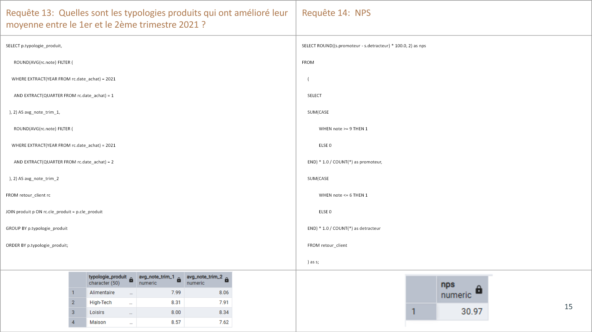

Magasins, départements, produits et sources sur une définition commune.Stores, departments, products and channels using a shared definition.
Projet 05 · Étude de cas complèteProject 05 · Full case study
Écouter 3 000 retours clients avec SQL.Listen to 3,000 customer reviews with SQL.
J’ai structuré les données de satisfaction de BestMarket dans un modèle relationnel, sécurisé les jointures et traduit 17 questions métier en requêtes vérifiables.I structured BestMarket satisfaction data into a relational model, secured the joins and translated 17 business questions into verifiable queries.
- RôleRole
- Analyste SQLSQL analyst
- PérimètreScope
- Satisfaction clientCustomer satisfaction
- ModèleModel
- 3 tablestables
- LivrablesDeliverables
- Schéma + requêtesSchema + queries
01 · Contexte01 · Context
Transformer des avis dispersés en indicateurs comparables.Turn scattered feedback into comparable indicators.
BestMarket voulait comparer les magasins, les catégories de produits, les canaux de retour et les motifs d’insatisfaction afin d’améliorer l’expérience d’achat et la fidélisation. Les analyses devaient rester reproductibles et reposer sur un modèle documenté.BestMarket wanted to compare stores, product categories, feedback channels and dissatisfaction drivers to improve shopping experience and loyalty. Analyses had to remain reproducible and rely on a documented model.
3 000retours clientscustomer reviews
145produitsproducts
84magasinsstores
17questions SQLSQL questions
02 · Défi02 · Challenge
Obtenir le bon chiffre avec le bon dénominateur.Get the right number with the right denominator.
Une note moyenne, un taux de recommandation ou un NPS peuvent changer selon le traitement des valeurs manquantes, les doublons et le niveau d’agrégation. La qualité du modèle relationnel conditionnait donc directement la confiance dans les réponses.An average score, recommendation rate or NPS can change depending on missing values, duplicates and aggregation level. Relational-model quality therefore directly determined trust in the answers.
- Garantir une clé unique pour chaque retour client.Guarantee a unique key for every customer review.
- Relier chaque retour à un produit et à un magasin valides.Link every review to valid product and store records.
- Conserver le détail nécessaire aux analyses par source, catégorie, lieu et période.Preserve the detail needed for channel, category, location and period analyses.
Règle d’analyseAnalysis rule
Chaque KPI est accompagné de sa population, de ses filtres et de son niveau d’agrégation ; aucune moyenne globale n’est interprétée sans segmentation.Every KPI carries its population, filters and aggregation level; no global average is interpreted without segmentation.
03 · Démarche03 · Approach
Modéliser d’abord, interroger ensuite.Model first, query second.
- Définir le dictionnaireDefine the dictionaryType, sens, domaine et rôle de chaque champ avant création des tables.Type, meaning, domain and role of every field before table creation.
- Concevoir le schémaDesign the schemaUne table de faits de retours reliée aux référentiels produit et magasin.A feedback fact table linked to product and store reference tables.
- Charger et contrôlerLoad and checkDoublons, clés étrangères, valeurs attendues et couverture entre tables.Duplicates, foreign keys, expected values and cross-table coverage.
- Traduire les besoinsTranslate requirements17 requêtes sur notes, magasins, produits, canaux, recommandations et évolution temporelle.17 queries on scores, stores, products, channels, recommendations and time evolution.
- Rendre les résultats lisiblesMake results readableAlias explicites, tris utiles et calculs commentés pour faciliter la vérification.Explicit aliases, useful sorting and commented calculations to simplify verification.
04 · Résultats04 · Outcomes
Une base prête à répondre aux questions de satisfaction.A database ready to answer satisfaction questions.
71 %taux de recommandationrecommendation rate
30,97NPS
3dimensions d’analyse majeuresmajor analysis dimensions
17réponses reproductiblesreproducible answers
Évolution des notes et recommandations dans le temps.Evolution of scores and recommendations over time.
Catégories et lieux où une revue qualitative est la plus utile.Categories and locations where qualitative review is most useful.
Chaque résultat reste relié à une requête et à son périmètre.Every result remains linked to a query and its scope.
05 · Preuves05 · Evidence
Du schéma aux résultats calculés.From schema to calculated results.


06 · Limites et compétences06 · Limits and skills
Décrire l’échantillon sans inventer de causalité.Describe the sample without inventing causality.
- Les répondants ne représentent pas nécessairement tous les clients BestMarket.Respondents do not necessarily represent all BestMarket customers.
- Un écart entre magasins peut refléter leur clientèle, leur volume ou leur contexte local.A difference between stores may reflect clientele, volume or local context.
- Le NPS décrit une intention déclarée, pas un comportement futur garanti.NPS describes stated intent, not guaranteed future behavior.
- Une analyse causale demanderait un protocole, des variables supplémentaires ou une expérimentation.Causal analysis would require a protocol, additional variables or an experiment.
Schéma relationnel, jointures, agrégations et CTE.Relational schema, joins, aggregations and CTEs.
NPS, recommandation, segmentation et lecture prudente.NPS, recommendation, segmentation and careful interpretation.